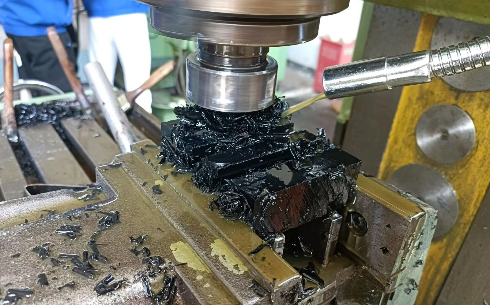
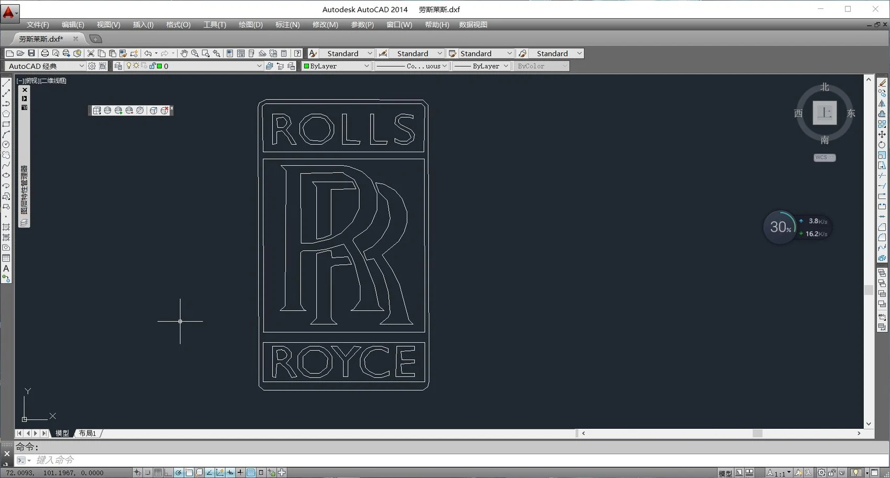
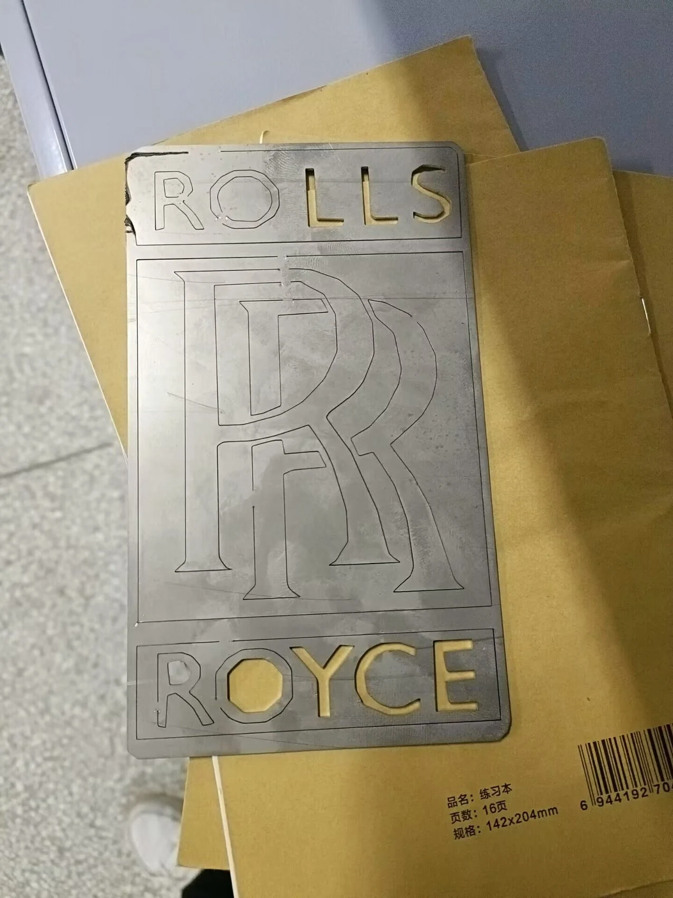
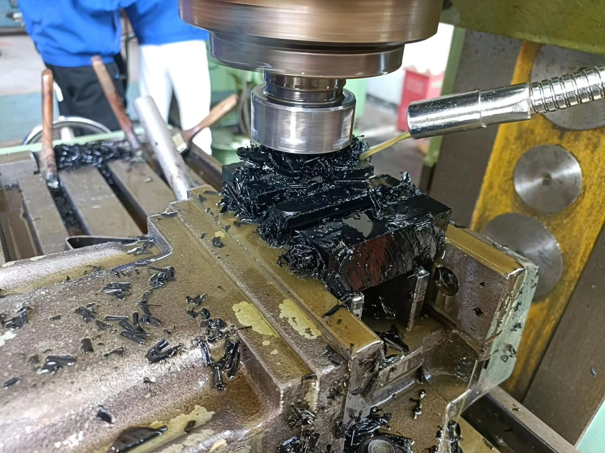
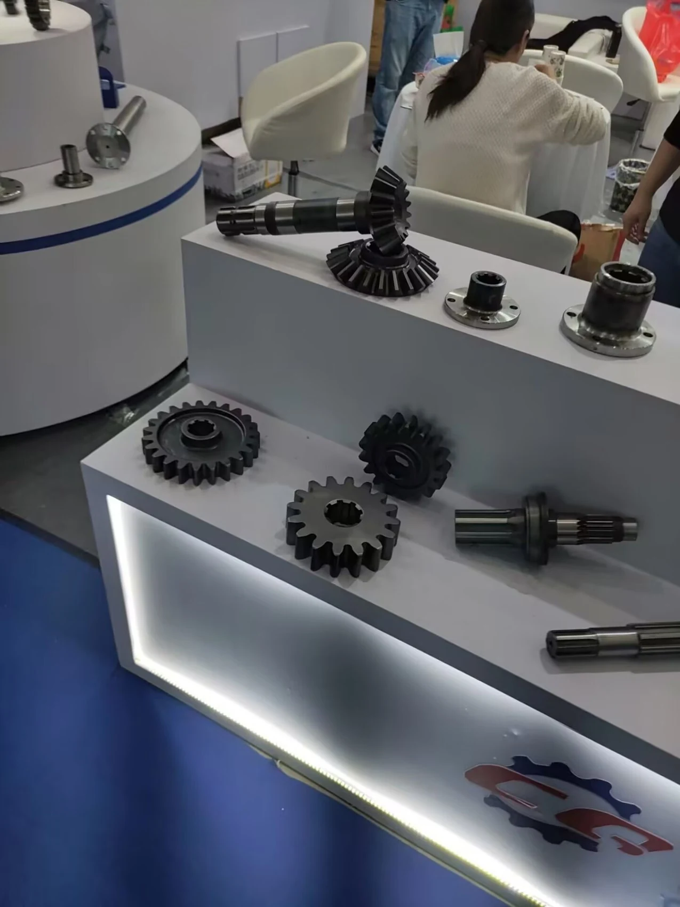
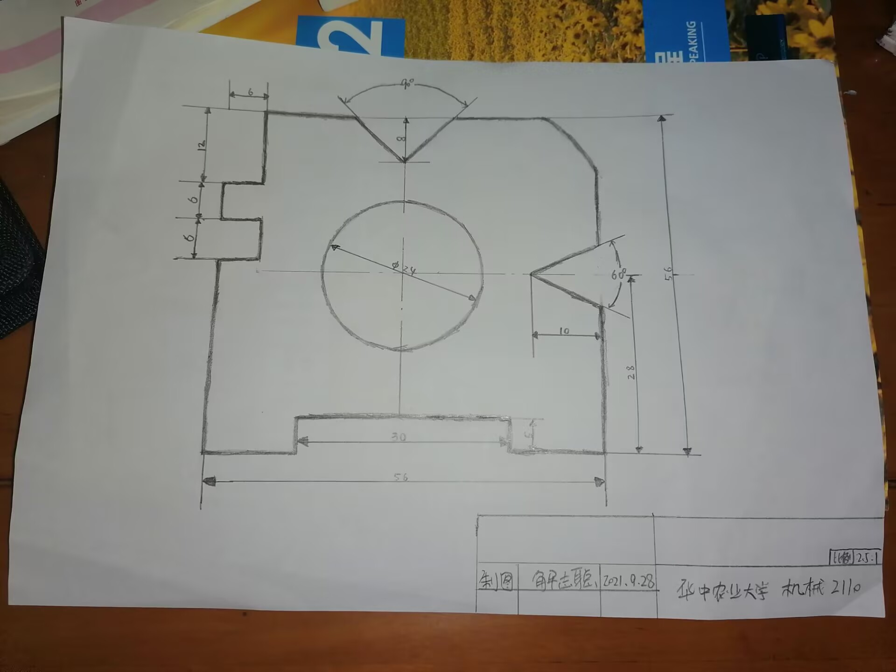
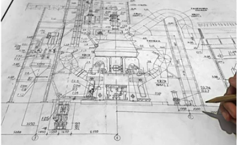

Huazhong Agricultural University (undergraduate) · Workshop training
University Workshop Training (laser cutting, CNC, 3D printing)
Undergraduate workshop training in three processes: I turned my own AutoCAD DXF profile into a laser-cut and engraved metal plate, and trained in CNC milling and 3D printing.
My role: Trainee. I prepared the DXF geometry, checked the cut part's contour quality and cleaned it up, worked through a basic 3D printing workflow, and practised or observed CNC milling setup and safety.

What I practised
- Prepared 2D vector geometry in AutoCAD and exported it as DXF for laser cutting and engraving.
- Checked the laser-cut part against the drawing for contour quality, then cleaned it up.
- Practised or observed CNC milling: workholding, spindle and tool motion, cutting fluid, chips and machine safety.
- Reviewed machined gear and shaft examples to see how CAD geometry becomes real manufactured features.
- Worked through a basic 3D printing workflow, from digital geometry to build orientation and post-processing.
From drawing to part
The DXF profile and the plate cut from it, milling and machined examples, and two hand-drawing exercises.






Where I have used it since
- Energy-harvesting backpack, University of Auckland: laser-cut acrylic plates, 3D-printed parts and a welded generator support for the suspended-load platform I designed and built.
- Outdoor IoT sensor enclosure: manufacturability choices for screw bosses, the gasket and lid details.
Looking for a hands-on graduate engineer?
I am happy to talk through how I take a design from CAD to a physical part.